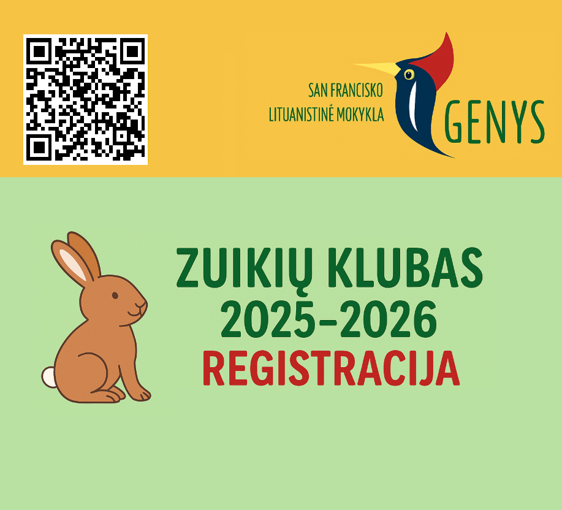
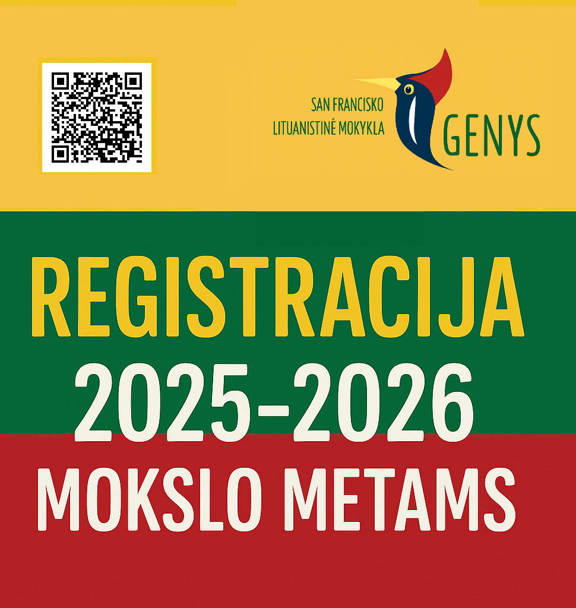

REGISTRACIJA · 2026–2027
Prisijunkite prie „Genio“
Kviečiame vaikus ir šeimas pradėti ar tęsti lietuvišką mokymosi kelionę.
ZUIKUČIŲ KLUBAS · 2026–2027
Registracija jau
prasideda!
Kviečiame mažiausius mūsų bendruomenės narius prisijungti prie „Zuikučių klubo“ – ikimokyklinio amžiaus ugdymo grupės.
- AMŽIUS
- 1–3 m. 11 mėn.
- KADA
- Kas antrą šeštadienį
- LAIKAS
- 9:30–12:00 val.
Tai smagi, žaisminga ir šilta lietuviška aplinka, kurioje mažieji kartu su šeimomis mokosi kalbos, pažįsta tradicijas, dainuoja, žaidžia, kuria ir draugauja.
Pildyti registracijos anketą ↗
GENYS · 2026–2027 MOKSLO METAI
Lietuviška kelionė
prasideda čia.
San Francisko lituanistinė mokykla „Genys“ kviečia 4–14 metų lietuvių kilmės vaikus mokytis lietuvių kalbos, pažinti Lietuvos kultūrą bei tęsti ar pradėti savo mokymosi kelionę.
REGISTRACIJOS TERMINASIki liepos 1 d.Po 2026 m. liepos 1 d. registracijos mokestis nebus grąžinamas.
Pildyti mokyklos anketą ↗Registracijos mokestis mokamas per „Zeffy“.
